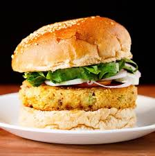

Veg-Burger

THis photo and recipe is for a burger and not ANY kind of burger
I am talking about a juicy Veg Burger :)
I will guide you through the best recipe of veg burger you have ever seen or made.
LIST OF INGREDIENTS:-
- Two ready-made buns freshly from the nearest supermarket.
- Onions
- A frozen patty
- Lettuce
- Tomato
- Mayonnaise
- Various spices
- Red hot chilli sauce
- TIME
-----------Steps to make IT-----------
- Warm the buns to get the feel that they are straight out of the oven.
- While your buns are in the process of becoming fresh deep fry your PATTY until golden brown
- In the mean time cut a slice of tomato and onion likewisw and tear out a lettuce leaf (Strictly follow these tearing part)
- When your buns are ready and the patty golden dark brown (let us be honest, you did not expect it to be golden brown, right??) add the hot chiili sauce on the buns and the patty
- Slam some mayo on the patty and smash the veggies onto them
TADA... your best veg burger is ready.
Now take the taste as if your life contains it and let the heat sink in
You are welcome
😜
Home